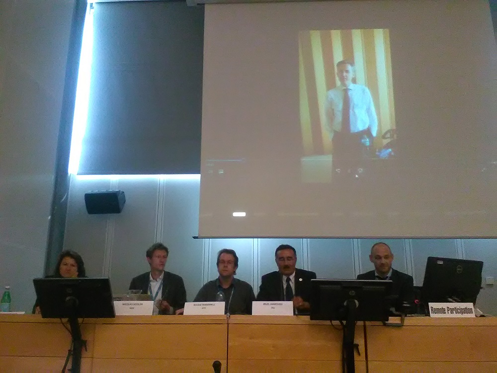

There is “no question” that there is a link between the infrastructure of the internet and human rights, Nicolas Seidler, senior policy advisor at the Internet Society, said at an information society event this week. Human rights are becoming “increasingly part of the design of the internet,” Niels ten Oever, head of digital at ARTICLE 19, said at the same event.
The thematic workshop Rights, Governance, Protocols and Standards was organised on 12 June during the World Summit on the Information Society Forum 2017 (WSIS Forum 2017), taking place from 12-16 June. The WSIS Forum, co-organised by International Telecommunication Union (ITU), UNESCO, United Nations Development Programme (UNDP) and UNCTAD, is the largest annual gathering in the world of the “ICT for development community” according to ITU.
The different speakers discussed the close relationship between internet and human rights.
Internet and Human Rights
Theresa Swinehart, senior vice president, Multistakeholder Strategy and Strategic Initiatives, Internet Corporation for Assigned Names and Numbers (ICANN), said that the discussion about human rights and the internet is “an important and timely discussion.” The roles and responsibilities in human rights have developed over time, she added. The role of ICANN in the area of human rights is really limited, Swinehart said. The mission of ICANN does not allow it to go into content-related issues, she added.
David Kaye, UN special rapporteur on the promotion and protection of the right of freedom of opinion and expression, told the conference that states are increasingly putting pressure on private companies. Kaye raised the question about the responsibility of private actors to safeguard freedom of expression There are no responsibilities under international law of freedom of expression for private actors in the same way as there are responsibilities for states, he said.
Seidler told the conference that it is important to raise awareness about human rights among engineers who write code. Not every engineer is a human rights activist or expert, he said. Brian Trammell, member of the Internet Architecture Board of the Internet Engineering Task Force (IETF), said that “engineers have values that they often do not like to think of as values.”
Human rights are an international recognised framework, Seidler said, and can therefore be a useful tool to govern the internet. Some people see the framework of human rights as politically influenced. Ethical principles may also be a useful tool as they go even further than human rights, Seidler said.
Bilel Jamoussi, chief of the Study Groups Department at ITU, referred to the International Telecom Regulations, adopted at the World Conference on International Telecommunications in 2012 in Dubai. It is stated in the preamble of the regulations that the “Member States affirm their commitment to implement these regulations in a manner that respects and upholds their human rights obligations.” This sentence was the object of a long debate, Jamoussi said (IPW, ICTs, 30 April 2012).
Future of the internet
Swinehart said that there is a trend toward accessibility, which is closely connected with the right of education. We are only in the beginning of the process in the governance of the internet by human rights, she said.
We should move towards enabling a wider and more inclusive internet connectivity, according to Jamoussi. If the economic barrier of international mobile roaming does not decrease, a lot of people, especially in Africa, will not be able to connect with the internet. Connectivity entails a human rights aspect, he said.
Seidler predicted that there will be a movement to go back to the original spirit of the internet, a peer-to-peer network with less intermediaries.
There remain a lot of challenges with universal security and trust in the context of the internet, Trammel said. Jamoussi underlined that the Internet of Things is struggling with security issues. We need to think about privacy and security by design in the context of the Internet of Things, before the scale of the technology gets out of control, he said. There are a lot of privacy issues for people whose household devices are connected with the internet, because these devices contain a lot of data. The right approach is privacy and security by design, he added.
Elise De Geyter is an intern at Intellectual Property Watch and a candidate for the LLM Intellectual Property and Technology Law at the National University of Singapore (class 2017).
Image Credits: Elise De Geyter

{kind=link}
[…] WSIS Forum: Close Link Between Internet And Human Rights: There is “no question” that there is a link between the infrastructure of the internet and human rights, Nicolas Seidler, senior policy advisor at the Internet Society, said at an information society event this week. Human rights are becoming “increasingly part of the design of the internet,” Niels ten Oever, head of digital at ARTICLE 19, said at the same event. Read More […]